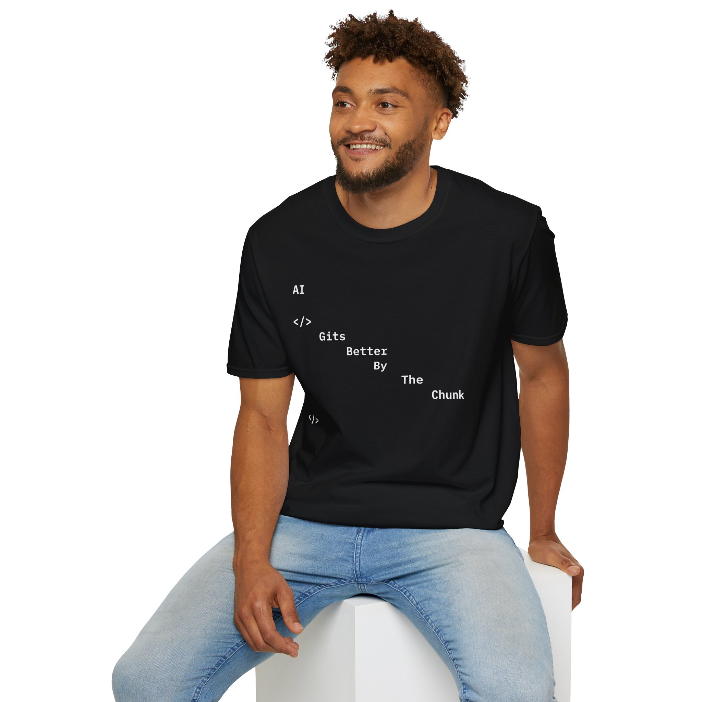

what it is, where it came from,
and when it was made —
without asking you
to trust us.
Most limited apparel runs on scarcity theater. The drop is real because the hype says so. You believe it because enough people believe it. We built a different system: every piece carries a cryptographic identity that exists outside the brand. The hashes are there whether we are or not.
Cyber Apparel Co. is for the people who understand the infrastructure. Who know what a SHA-256 hash is. Who've pushed to main at 2am. Who grinned when they read "AI Gits Better By The Chunk" — not because it's a pun, but because it's accurate.
What we build toward
-
01
Verification is non-optional Every release includes the full authentication stack — artifact ID, three SHA-256 hashes, creator mark, and a permanent lookup record. There is no tier of release that skips this. If it can't be verified, it doesn't ship.
-
02
The record outlives the brand Hashes are committed at release and never change. The artifact data is stored as plain JSON — no proprietary tooling, no database, no login. If Cyber Apparel Co. disappears tomorrow, your verification record still works.
-
03
Drops are statements, not products Each release documents something specific about a moment in technology or culture. Drop 001 documents the inflection point when AI became infrastructure. Future drops will mark other moments worth wearing.
-
04
Typography is the design No graphics. No logos. No characters. Just type — set in IBM Plex Mono, the typeface of terminals and technical documentation — arranged so the garment itself becomes a diagram of the thing it's about.
-
05
IP is explicitly claimed Brand names, phrases, and marks are claimed per-drop and listed on the Legal / Marks page. We don't rely on implicit ownership. The record is public. The claim is clear.
How it works under the hood
Three independent hashes per artifact. Garment production spec, artwork master, metadata JSON. Computed at drop time. Static forever.
Artifact data stored as plain artifacts.json —
readable in any text editor. No API. No backend. No rate limits.
Each garment's interior QR links to /verify?id=CA-AI-CHUNK-0001.
One scan returns the full authenticated record.
The entire registry is a static site. No server. No database. Deployable anywhere.
The site itself ships with a site-manifest.json
containing real SHA-256 hashes of its own files.


Designed for people
who read type.
IBM Plex Mono ExtraLight on the front. The weight that reads best on a dark background at 4am. Each word indented further right — the same diagonal rhythm as a git diff, a training loop, a for-each that gets better on every pass.
IBM Plex Mono SemiBold on the back. Two words. No decoration. AI .chunk — the way it would look as a variable name right before everything finally clicked.
View Drop 001 →